Кухня RUA — итальянский промышленный стиль с островом
Промышленный стиль для любых интерьеров
Rua
Утончённая интерпретация индустриального стиля больших лофтов. Итальянская кухня премиум-класса, в которой пространства переплетаются, а остров становится частью гостиной.
Rua сочетает утончённость формы и мощь индустриальных металлических элементов, характерных как для открытых стеллажей, так и для подвесного острова. Концепт притягательной силы, подкреплённый тщательным выбором материалов. Антрацитовый металл — в конструкции и в вытяжке — дополнен элегантностью дуба, тонированного в серо-дымчатый цвет, и загадочной красотой столешницы из керамогранита Gres Ardoise Noir.
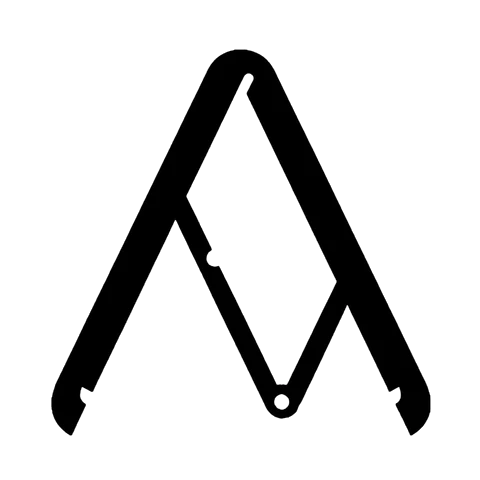
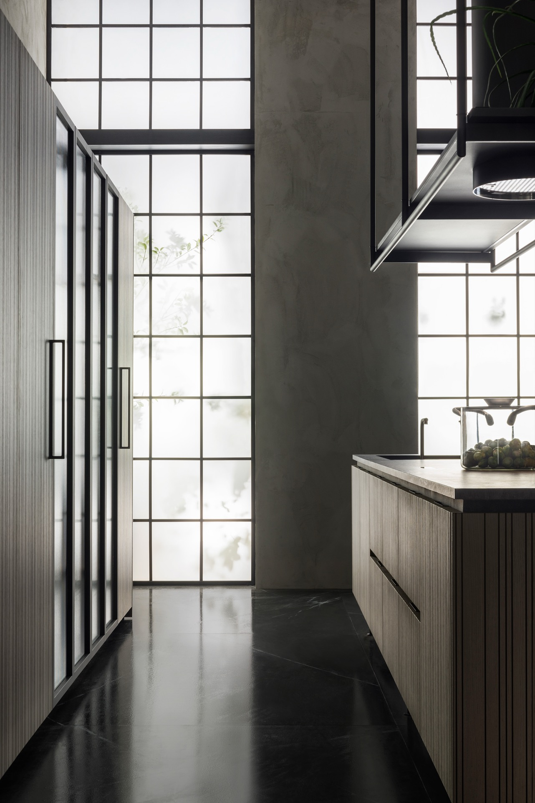
Пространство для творчества
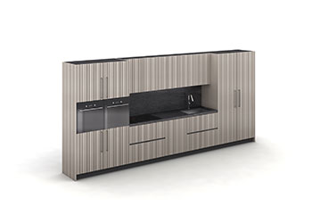
ЛИНЕЙНАЯ КОМПОЗИЦИЯ КОЛОНН, ОСНОВАНИЙ И НАВЕСНЫХ ШКАФОВ
Фасады: шпон дуба Rovere fumo
Столешница: Gres Ardoise Noire
Цоколь и ручки: металл антрацит
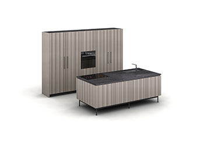
ЛИНЕЙНАЯ КОМПОЗИЦИЯ С ОСТРОВОМ
Фасады: шпон дуба Rovere fumo
Столешница: Gres Ardoise Noire
Основания и ручки: металл антрацит
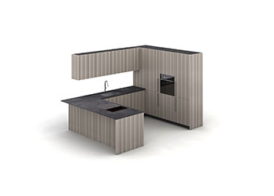
УГЛОВАЯ КОМПОЗИЦИЯ
Фасады: шпон дуба Rovere fumo
Столешница: Gres Ardoise Noire
Цоколь и ручки: металл антрацит
Отделочные материалы
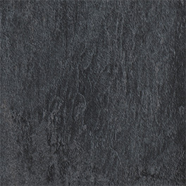
Gres Ardoise Noir
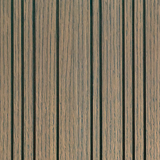
Rovere fumo anima tinta
Предлагаемые отделки
- Столешница
- Gres Ardoise Noir
- Фасады
- Дуб тонированный Rovere grigio fumo
- Витрины
- Бельгийское рифлёное стекло
- Конструкция
- Металл антрацит
- Колонны
- Дубовые ящики с соединением «ласточкин хвост»

Стоимость коллекции RUA — от 3 000 000 ₽
RUA от TM Italia — итальянская кухня премиум-класса, лауреат Compasso d'Oro 2020. Мастерство видно в каждой детали: рифлёное бельгийское стекло, ящики из дуба с ручным соединением «ласточкин хвост», антрацитовый металл. Каждое изделие изготавливается под ваш проект — линейная, угловая или кухня с островом — с учётом особенностей пространства и ваших пожеланий.
Наш менеджер Елена поможет выбрать конфигурацию и подберёт сочетание материалов, которое сделает вашу кухню по-настоящему единственной в своём роде.
Скрытая варочная панель
Столешница острова выполнена из керамогранита Gres Ardoise Noire со встроенной мойкой и индукционной варочной панелью, установленной под столешницей.
Композицию дополняют колонны с утопленными фасадами, оснащённые винными полками из дуба и винным шкафом.
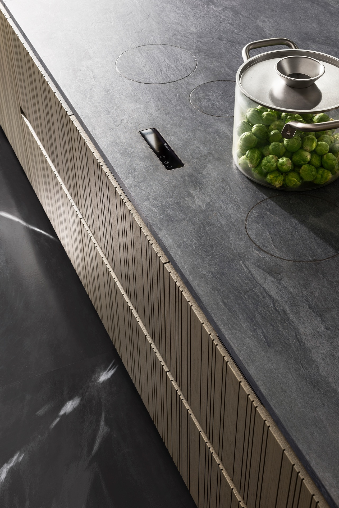
Скрытая варочная панель
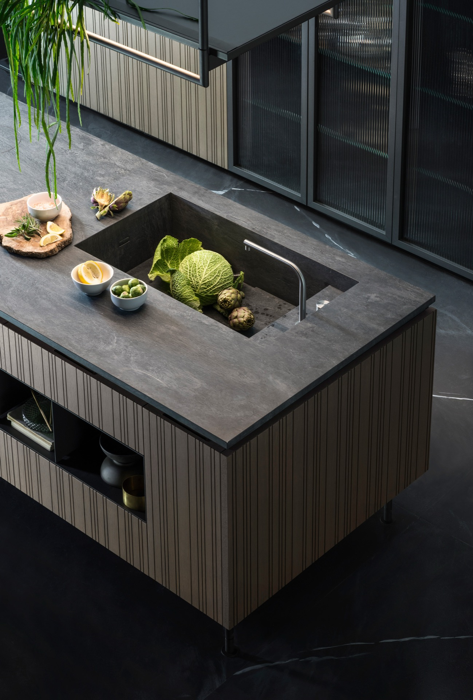
Встроенная мойка
Красота в деталях
Подсвеченные витрины и открытые полки
Колонна-витрина со стеклянной задней стенкой цвета fumé, стеклянными полками и фасадами из бельгийского рифлёного стекла в металлической раме антрацит.
Фасады колонн из дуба серо-дымчатого цвета скрывают внутренние ящики с ручным соединением «ласточкин хвост», которое подчёркивает мастерство TM Italia.
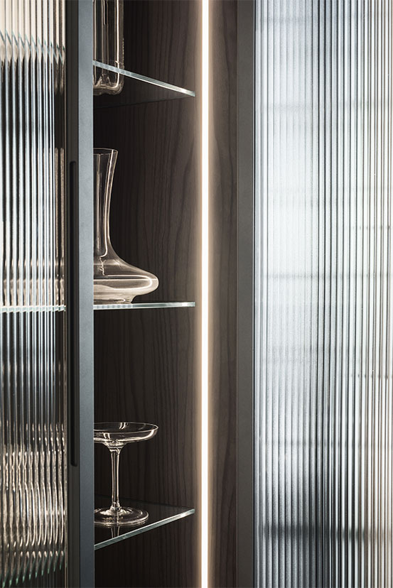
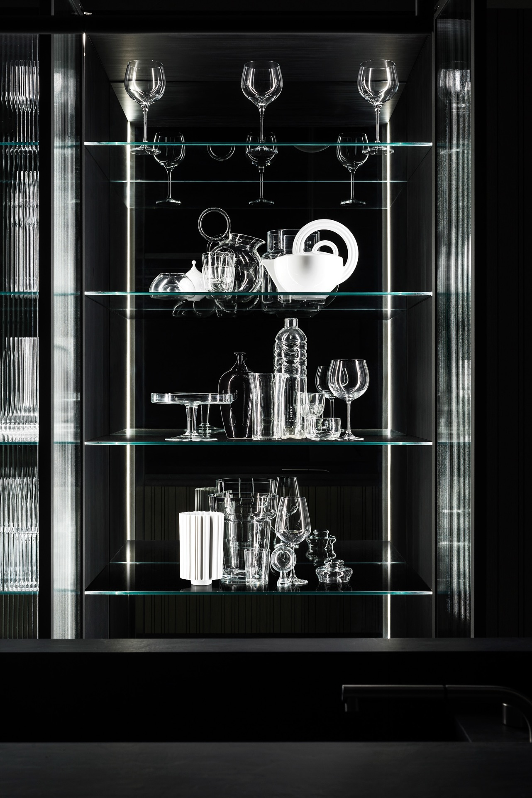
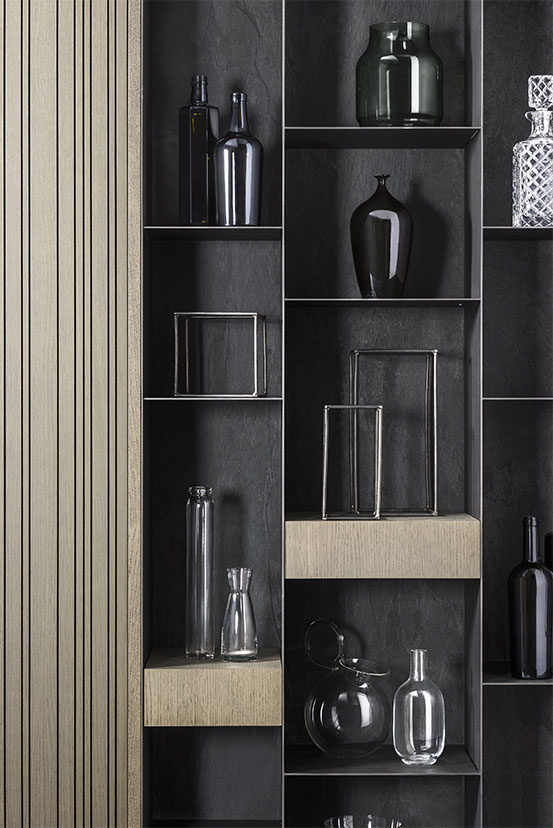
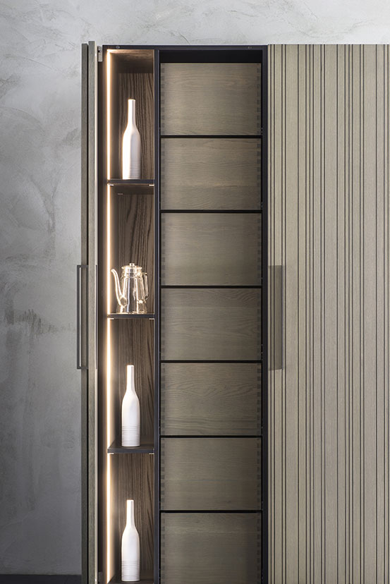
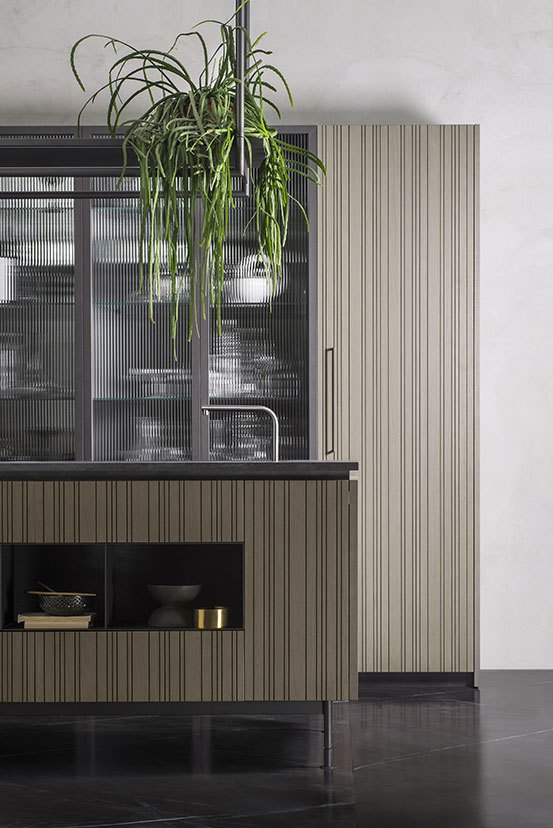
LED подсветка по периметру
Обсудить проект
из коллекции RUA
Персональная консультация по конфигурации и материалам.